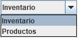
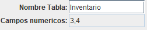
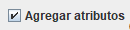
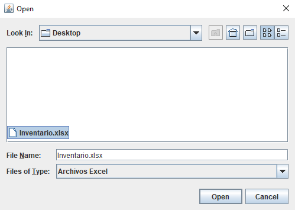
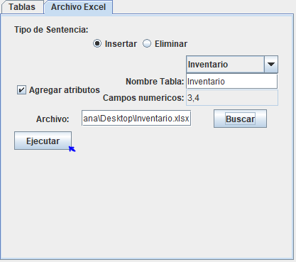
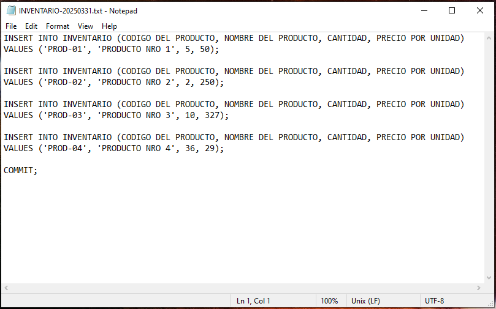

Instrucciones de la Ventana Archivo Excel
Esta parte del programa se encarga de leer un archivo excel y generar un archivo de texto
con los datos del archivo excel en formato de una sentencia SQL. Los pasos a seguir son
los siguientes.
-
Primero debe seleccionar el tipo de sentencia SQL desea que el archivo genere.
Si desea generar una sentencia INSERT seleccione Insertar, y si es DELETE
seleccione Eliminar
-
Después debe elegir el nombre de la tabla se llenarán automáticamente los campos
Nombre Tabla y Campos numéricos con los datos que se ingresaron en
la ventana Tablas. El campo Nombre Tabla será también el nombre con
el que se guardara el archivo de texto que genere el programa.


-
Si desea que se muestren los campos o columnas en la sentencia SQL seleccione
la opcion Agregar atributos.

-
Presione el boton Buscar, le aparecera una ventana emergente donde debera
seleccionar el archivo excel que se va a procesar.

-
Una vez llenada toda la informacion darle clic al boton Ejecutar.

Esto generará un archivo de texto con el mismo nombre del campo Nombre Tabla, más
la fecha en que se ejecutó el programa en formato "día mes anio" sin espacios. El archivo de texto
aparecera en la misma direccion en la que está el archivo excel selecionado.
